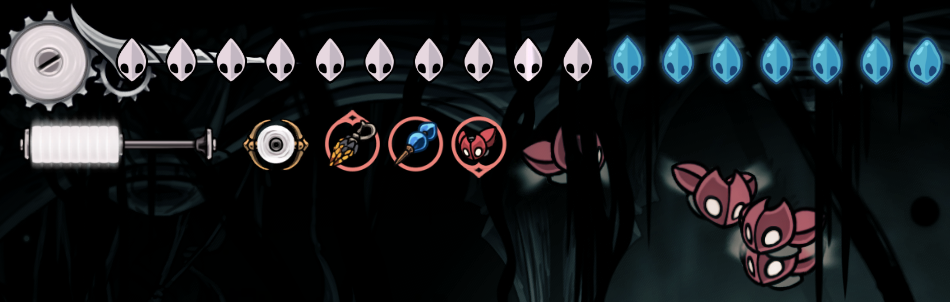

Guide Description
This guide will mainly focus on routing and will be broken down to objectives of grabbing tools,
power-ups and equipment upgrades in certain orders. There would be a lot of tools and crests and
various upgrades along the described route but they won't get mentioned and it will be up to you
to recognize their proximity to you and grab them along the way.
The starting objective is grabbing Swift Step upgrade and any Flea
along the way. After which we will head towards the Hunter's March
to get the Fractured Mask tool and free this area's Flea.
The next objective is getting the climbing Cling Grip upgrade.
But before that, there is the Moorwing bossfight which can be delayed by
completing the Flee Master quest and accompanying them to their new location.
Once the climbing upgrade is obtained and before going to face Widow,
either go to Sinner's Road to get the free Simple Key
in the top right corner of the area, or head back to Bone Bottom and buy
the Simple Key from the merchant. With the Simple Key obtained,
head to the sealed door that leads to the Wormways zone as the next
objective is to grab the Plasmium Phial and Shell Satchel tools.
Architect crest and the Plasmium Phial tool will be your bread
and butter for this run so make sure you are getting as many tools as you can
along the path in order to unlock the Architect crest as soon as possible.
After Wormways head back to Widow's fight. Afterwards,
go to the Citadel either through The Mist or the Last Judge.
Just make sure to skip The Underworks as the zone is avoidable regardless of
the path you choose. The next Objective is getting the Clawline without fighting
Trobbio, which means taking the Whiteward path that leads to the Twelfth Architect.
Make sure to grab the Injector Band tool while going through Whitewards
as it is the most important blue tool to slot. From there, get the Clawline
upgrade and head back to Grand Bellway via the lift in the Underworks.
The final Specific Upgrade to get is the double jump from the Mount Fay.
Once you got the upgrade, start hunting down Mask Shards, Silk Spools,
Needle Strike, Pale Oils, Silk Hearts, Tool Pouch & Crafting Kit upgrades,
enough tools and Memory Lockets to unlock the Architect crest
and almost all of Eva's upgrades. With all of that done, you can finish the
main quests and Bilewater zone and head towards Act 3.
When you Start Act 3 you will only have the empty Hunter crest and down to 4 health.
Exiting and re-entering the save will rectify the health problem. A huge positive in this act
is that dying in the Old Hearts fights doesn't end your hardcore run, which means the
only threatening fight in this act is Lost Lace. So just make sure you got the last
Pale Oil and Mask shard before heading there.
Endgame Equipment and Setup

Crest and Tools:
- Architect
- Flintslate
- Plasmium Phial
- Cogfly
- Reserve Bind
- Long Claw
- Injector Band
- Silkspeed Anklets
- Magnetite Dice
- Shell Satchel